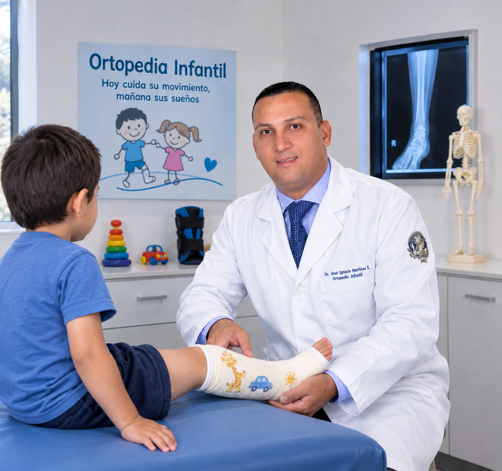

Ortopedia y Traumatología
Evaluación y manejo de patologías ortopédicas y traumáticas.
Dr. José Ignacio Martínez Suárez
Ortopedista y Traumatólogo
Especialista en Ortopedia Infantil
Médico especialista con amplia experiencia en el manejo de patologías ortopédicas y traumáticas en población pediátrica y adulta. Formación internacional en Brasil y Colombia.

Momentos destacados de su trayectoria profesional.


El Dr. José Ignacio Martínez Suárez es Médico, Ortopedista y Traumatólogo, especialista en Ortopedia Infantil y Trauma Ortopédico.
Cuenta con más de 15 años de experiencia en el manejo de patologías comunes y traumáticas de las extremidades en población pediátrica y adulta.
Tiene experiencia en cirugía reconstructiva pediátrica, trastornos congénitos, fracturas en niños y método Ponseti para el tratamiento del pie equinovaro. Es Magíster en Educación Médica.
Atención médica integral con enfoque especializado.
Evaluación y manejo de patologías ortopédicas y traumáticas.
Atención especializada de patologías musculoesqueléticas pediátricas.
Evaluación y manejo especializado de lesiones y traumatismos.
Valoración y tratamiento de fracturas en población pediátrica.
Procedimientos y manejo reconstructivo pediátrico.
Método Ponseti para el tratamiento del pie equinovaro.

Atención especializada enfocada en las necesidades ortopédicas y traumatológicas de niños y adolescentes.
Un recorrido académico sólido en Colombia y Brasil.
Universidad Libre – Seccional Atlántico
Barranquilla, Colombia
Universidad del Estado de Río de Janeiro (UERJ)
Río de Janeiro, Brasil
Universidad Vega de Almeida
Río de Janeiro, Brasil
Universidad Federal de Río de Janeiro
Hospital Clementino Fraga de Filho
Fundación Santa Fe de Bogotá
Bogotá, Colombia
Universidad de La Sabana
Colombia
Un recorrido construido con dedicación y excelencia clínica.
Hospital Universitario Pedro Ernesto / UERJ
Río de Janeiro, Brasil
Hospital Universitario Clementino Fraga de Filho
Río de Janeiro, Brasil
Fundación Santa Fe de Bogotá
Bogotá, Colombia
E.S.E. Hospital Departamental San Vicente de Paul
Garzón, Huila
E.S.E. Hospital Departamental San Vicente de Paul
Garzón, Huila
Fundación Clínica del Río
Montería, Córdoba
"Prize to the medical by achievement for a better life"
Ciudad de México IOCIM"Excellent Health Care IOCIM"
Tumbes, Perú IOCIM
Solicita información o agenda tu consulta con el Dr. José Ignacio Martínez Suárez.
Completa el formulario y nos pondremos en contacto contigo.